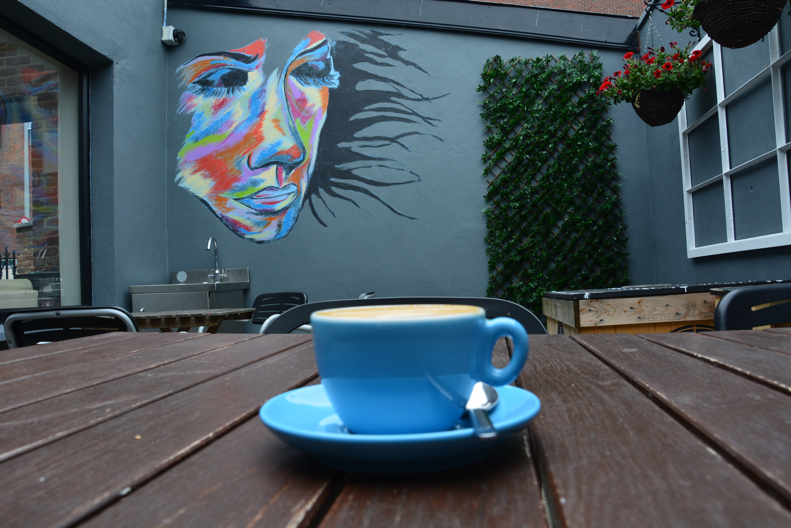
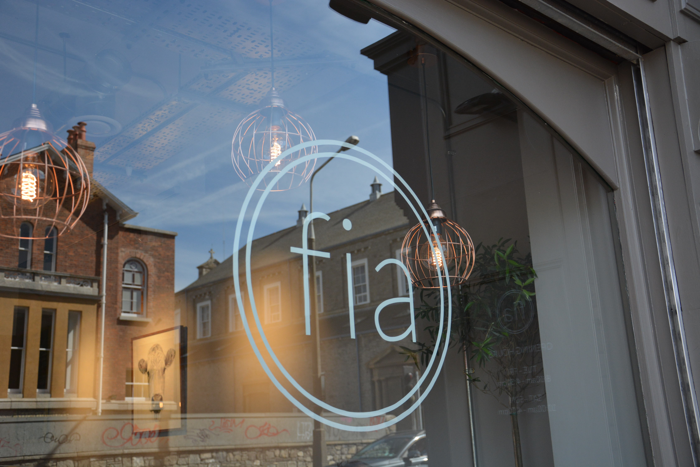
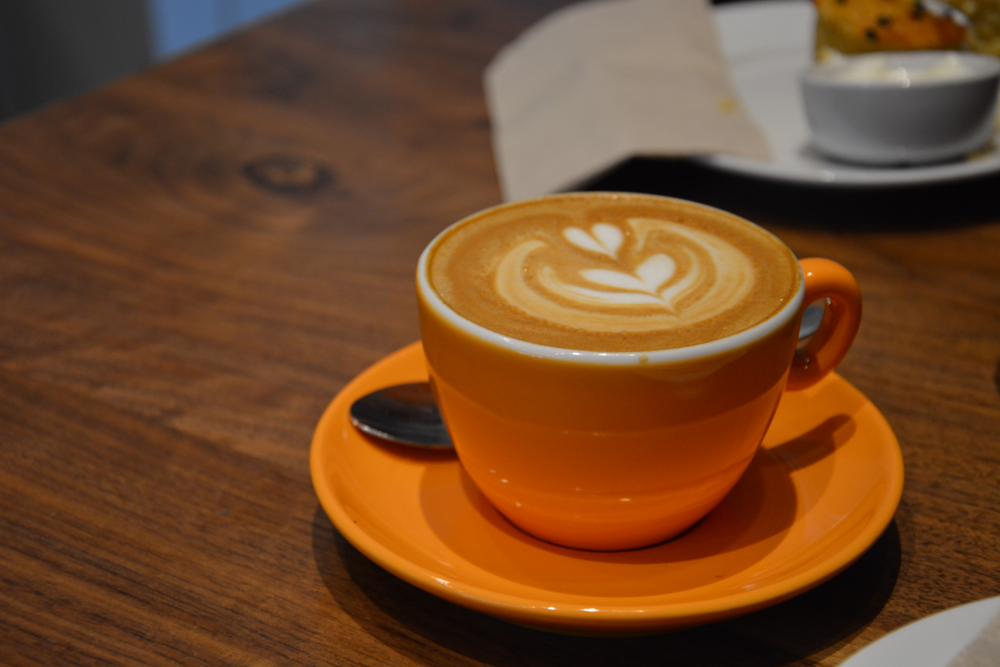
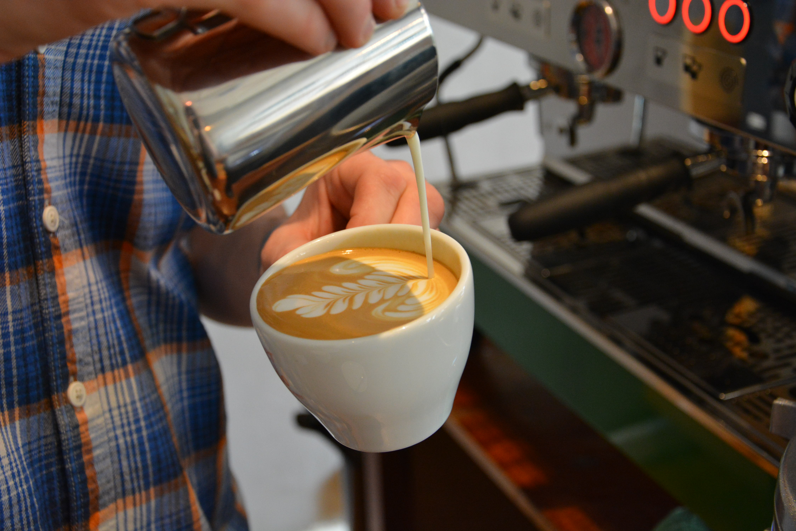
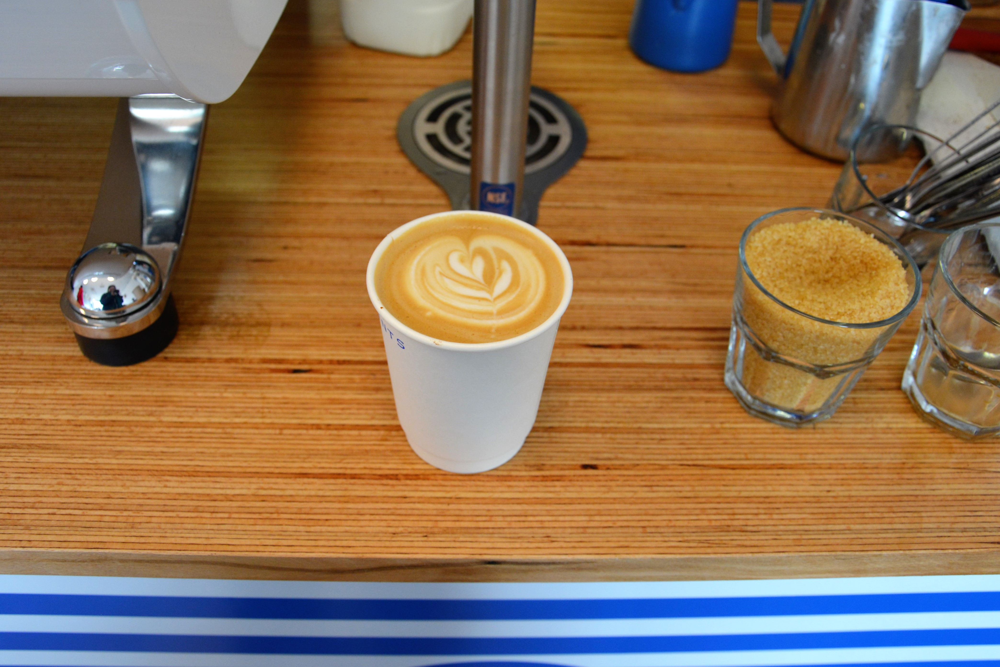
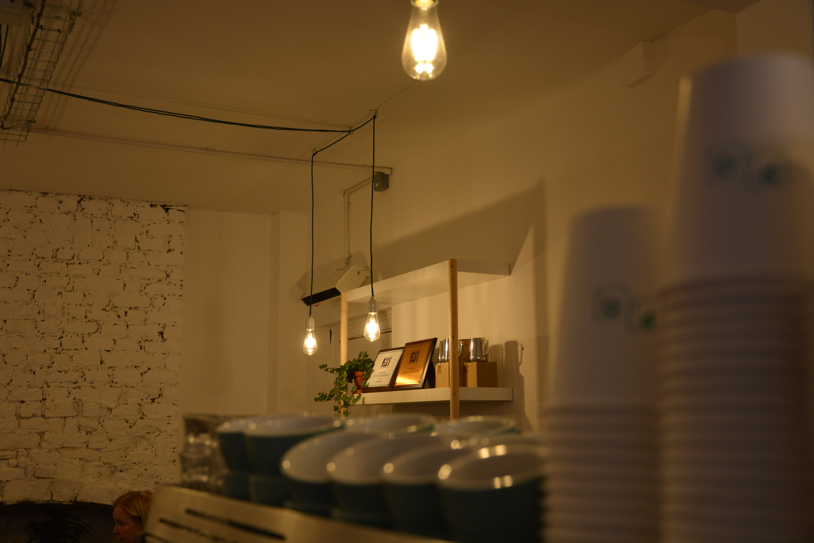
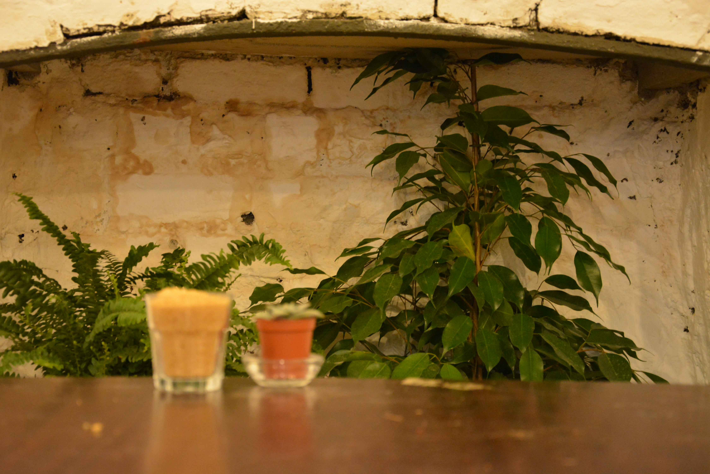
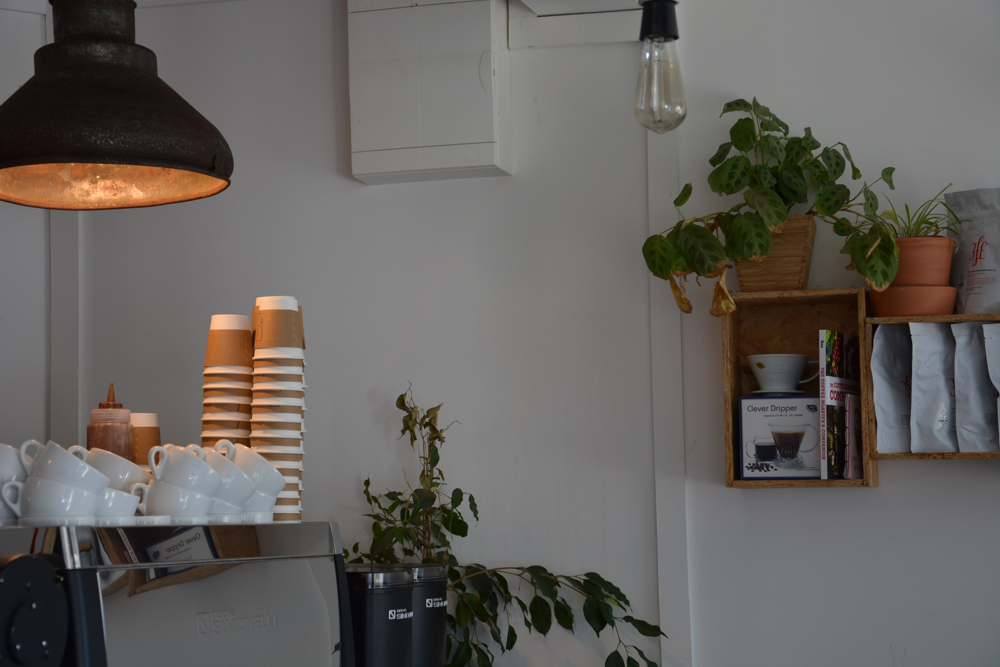
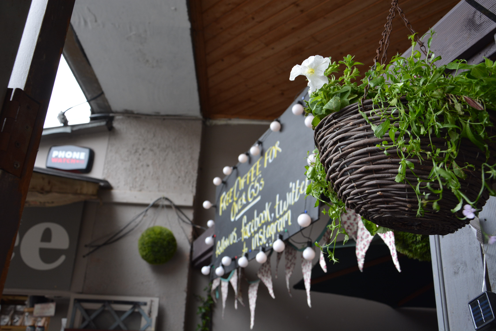
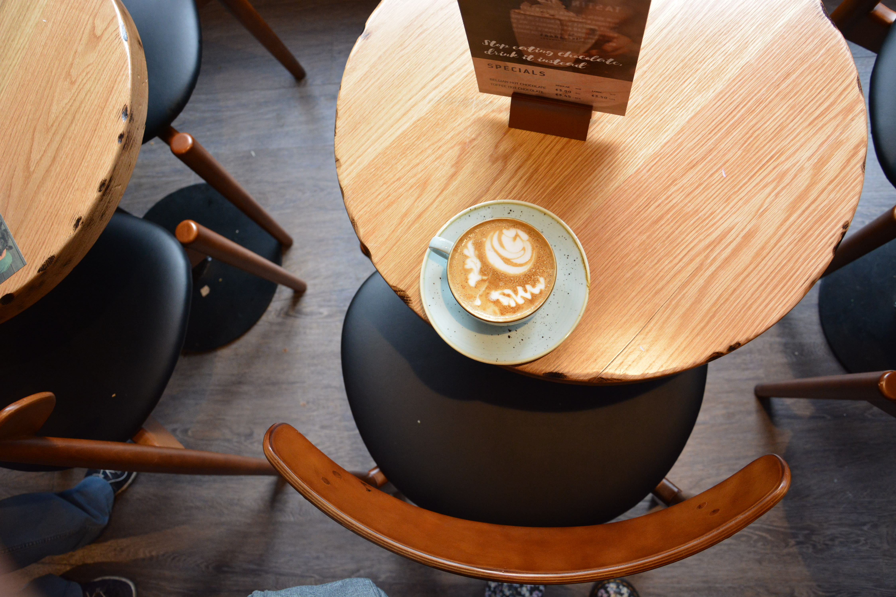

Have a peek into Dublin's coffee scene
Here is our photo gallery showcasing a variety of unique and charming cafés. From cosy corners to vibrant interiors, these snapshots capture the atmosphere and character of each spot. Have a browse and get inspired for your next coffee outing!









